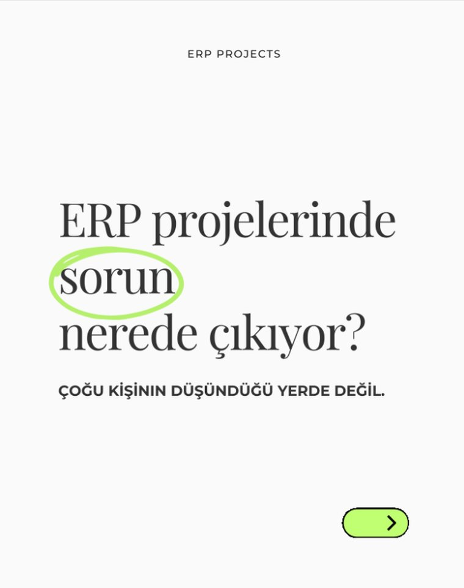
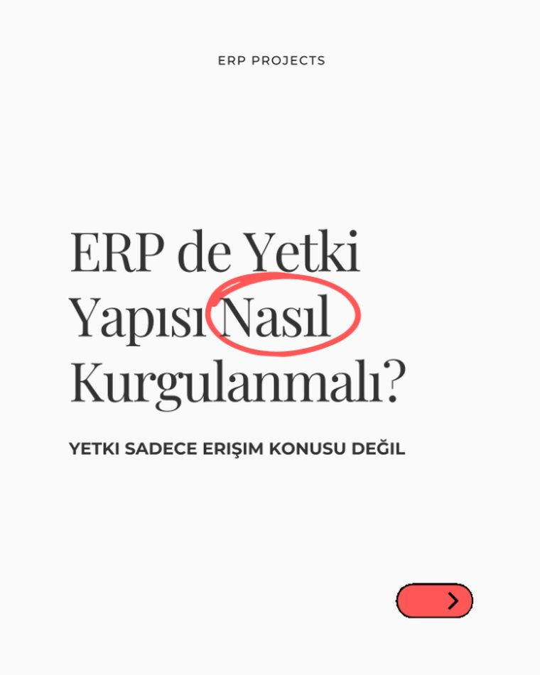
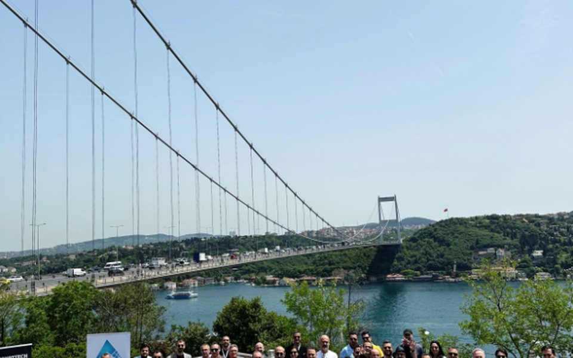
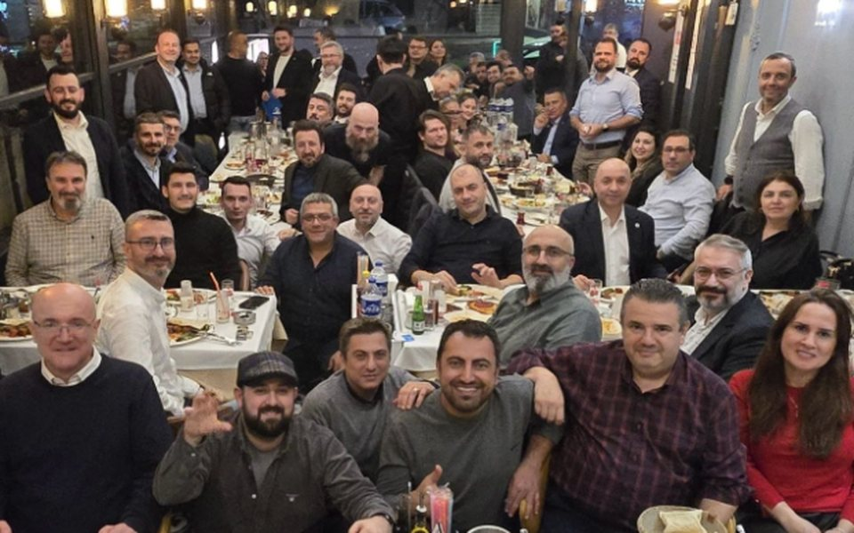
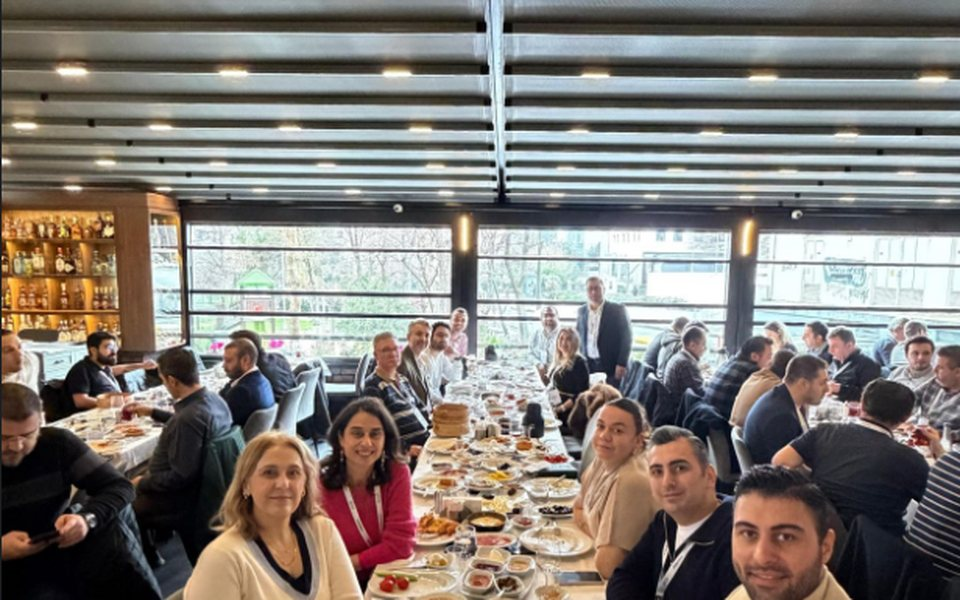

ERP Danışmanlığı
Süreç analizi, uyarlama projeleri, kullanıcı eğitimleri ve saha deneyimi.
Canias ERP • İş Süreçleri • Dijital Dönüşüm
Canias ERP | İş Süreçleri ve Dijital Dönüşüm
ERP projelerinde analiz, süreç tasarımı, teknik geliştirme, kullanıcı koordinasyonu ve canlı geçiş süreçlerini uçtan uca yönetmeye odaklanıyorum.
Hakkımda
2015 yılından bu yana ERP projelerinin farklı aşamalarında görev alıyorum. Kariyerime ERP danışmanı olarak başlayıp, ERP uzmanlığı ve proje koordinatörlüğü rollerinde devam ederek hem müşteri hem de danışmanlık tarafında önemli deneyimler kazandım.
Bugüne kadar üretim, sağlık, finans, eğitim ve hizmet sektörlerinde; satış, satınalma, stok yönetimi, finans, bütçe, lojistik ve entegrasyon süreçlerini kapsayan projelerde yer aldım. Canias ERP üzerinde süreç analizi, sistem tasarımı, geliştirme, kullanıcı eğitimi, test yönetimi ve canlı geçiş çalışmalarını yürüttüm.
ERP projelerinde başarının yalnızca yazılımdan değil; doğru süreçlerden, güvenilir veriden ve kullanıcı adaptasyonundan geçtiğine inanıyorum. Bu nedenle teknik çözümler geliştirirken iş ihtiyaçlarını ve operasyonel etkileri birlikte değerlendirmeye çalışıyorum.
Amacım, kurumların iş süreçlerini daha verimli, daha sürdürülebilir ve daha ölçülebilir hale getirecek çözümler üretmek.
Kariyer Yolculuğu
Süreç analizi, uyarlama projeleri, kullanıcı eğitimleri ve saha deneyimi.
Canias ERP, teknik geliştirmeler, operasyonel süreçler ve kurumsal raporlama.
Planlama, paydaş yönetimi, UAT, canlı geçiş ve ekipler arası koordinasyon.
İş süreçleri, entegrasyonlar, sürdürülebilir çözümler ve dijital dönüşüm odağı.
Uzmanlık Alanları
Analiz, kapsam takibi, test süreçleri, kullanıcı koordinasyonu ve canlı geçiş hazırlıkları.
Canias ERP süreçleri, TROIA geliştirmeleri, ekran düzenlemeleri ve operasyonel iyileştirmeler.
Mevcut durum analizi, süreç tasarımı, standartlaştırma ve departmanlar arası akışların netleştirilmesi.
Kurumsal süreçlerin daha izlenebilir, ölçülebilir ve sürdürülebilir hale getirilmesi.
Web servisleri, e-belge süreçleri ve üçüncü parti sistemlerle ERP entegrasyonlarının kurgulanması.
Operasyonel takip, KPI yönetimi, bütçe analizleri ve yönetsel karar süreçlerini destekleyen raporlama çözümleri.
Deneyim
Satış, üretim, lojistik, stok ve raporlama süreçlerinde ERP iyileştirme çalışmaları.
Finansal süreçler, entegrasyonlar, belge akışları ve operasyonel kontrol mekanizmaları.
İdari süreçlerin dijitalleştirilmesi, kullanıcı ihtiyaçlarının analiz edilmesi ve ERP süreçlerine uyarlanması.
İçerikler

ERP Projects
ERP projelerinde yaşanan problemlerin önemli bir kısmı yazılımdan değil; süreç, veri ve organizasyon yönetiminden kaynaklanır.
LinkedIn'de Oku →
ERP Projects
Yetkilendirme yalnızca ekran erişimi değildir. Doğru kurgulanmış bir yetki yapısı süreç güvenliğinin temelidir.
LinkedIn'de Oku →Yeni İçerik
ERP proje yönetimi, süreç iyileştirme ve dijital dönüşüm odağındaki yeni içerikler burada yer alacak.
HazırlanıyorEtkinlikler ve Topluluklar

BiTekDer
Siber güvenlik ve teknoloji gündeminin ele alındığı sektörel buluşma.
Etkinliği Gör →
Networking
Farklı sektörlerden teknoloji profesyonelleriyle deneyim paylaşımı ve networking.
Etkinliği Gör →
İTOC360 • BiTekDer
Operasyon yönetimi ve dijital dönüşüm başlıklarında gerçekleştirilen sektörel buluşma.
Etkinliği Gör →İletişim